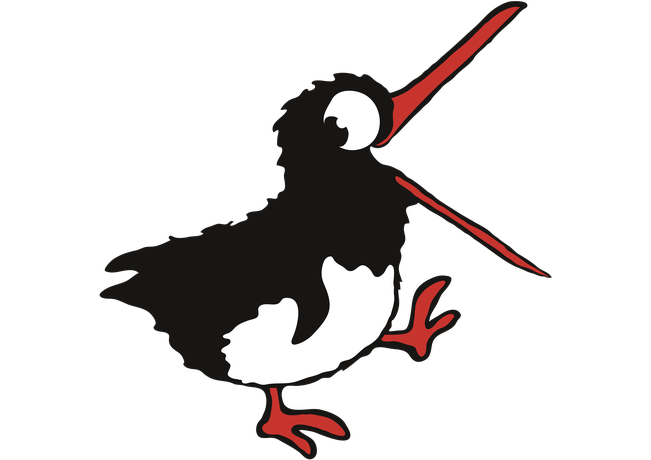

Wähle ein Thema und starte das Spiel.

Kronk springt von allein. Halte links oder rechts gedrückt (oder nutze die Tasten 1–4) und lande auf der richtigen Antwort. Falsche Plattformen brechen weg!
Deine bisherigen Punkte bleiben beim Üben erhalten.
★ NEU FREIGESCHALTET ★
Dein neuer Kronk wartet in der Charakterauswahl auf dich.